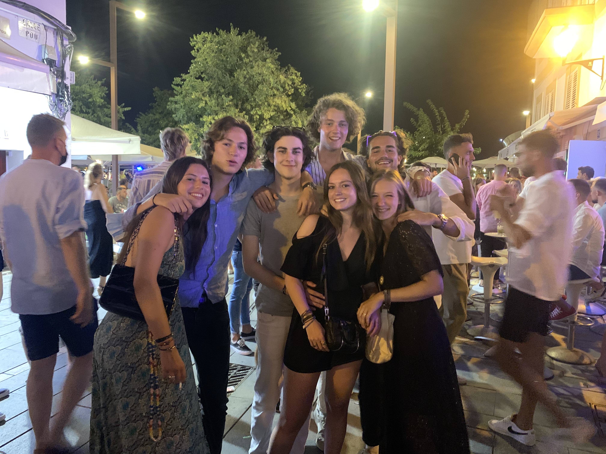

Welcome to Elise Tamagnaud's profil
Hello everyone, my name is Elise Tamagnaud and I am currently 19 years old. I am studying at IESEG, a business school and I would like you to get to know me through this page. I'm going to show you my life in general, what I like to do, my social relationships, a lot of things like that.
My educational situation
I am currently in my second year of business school at IESEG. However, this is my first year in business school. Last year, I was doing a degree in economics and management, with a health option. I really like IESEG, because of the diversity of the courses they offer and also because we have opportunities linked to foreign countries. For example, next semester I'm going to study in Chile. It would be a very good opportunity to discover new landscapes and a new culture. I know that this school can give me a lot of things, but I can't tell you what I want to work in later.
Am I a sportive ?
I have been doing sport since I was a little girl. I started with ballet, then continued with modern jazz dance and even hip-hop. I also started skiing at a very young age and I still love it! But the sport that is closest to my heart is horse riding, which I have been practising for almost 10 years now and 4 years in competition.

Am I a social person ?
I must confess that I am a very sociable person who does not find it difficult to approach people. However, I always keep the same friends and I am not the type to change often. I have known these friends since high school, and we are still very close now. We go on holiday together, we see each other often. For me, social ties are very important because they allow us to share experiences and therefore to make memories that we can laugh about later with friends.
Family
Now let me introduce you to my family! My father's name is Alexandre and my mother is Chloé. They are both 46 years old. They are still together. I also have a little sister who is 15 years old and is currently in high school. They all live in Paris. My parents made us travel a lot and I thank them for that because we could discover new cultures, new landscapes and share very good moments.